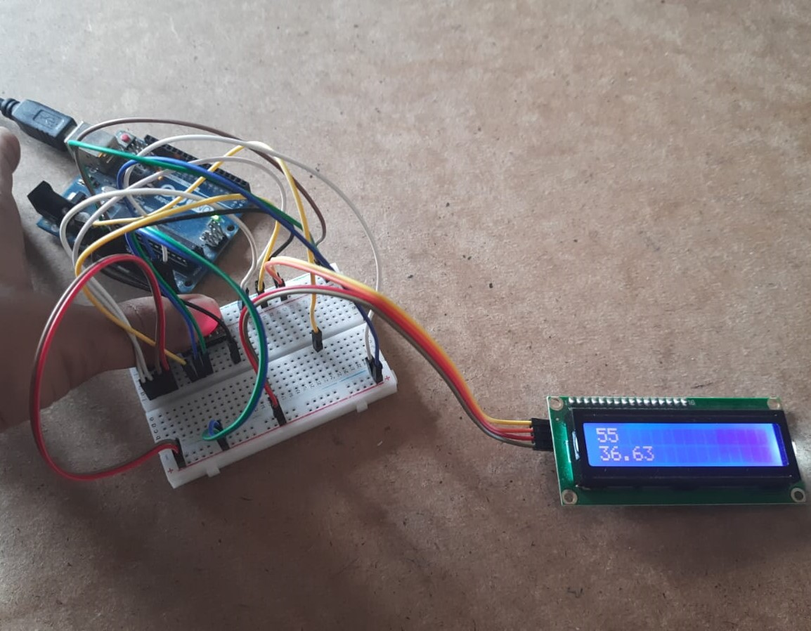
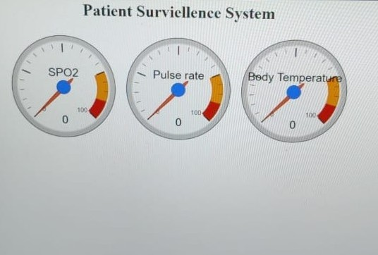

This project aims to make monitoring of patients in a hospital less dependent on human intervention by adding sensors which can check the patient’s vitals and store them in a database. The surveillance system will be quite practical in the medical field. Automatic storage of patient’s vitals will reduce the paperwork and manual burden. The doctors can check in on the patients any time without visiting them, and this might be crucial for patients in critical condition. To set up this project we connected ECG Sensor, SpO2 sensor and temperature sensor to an Arduino and sent the data retrieved by the sensors to an online database.

The webpage connected to the database displayed the real time data, and an alarm system using a buzzer connected to the Arduino setup. The buzzer rang when the measured data went beyond normal range. Further developments in this project include increasing the number of sensors and developing an app to display the real time data and send notifications.